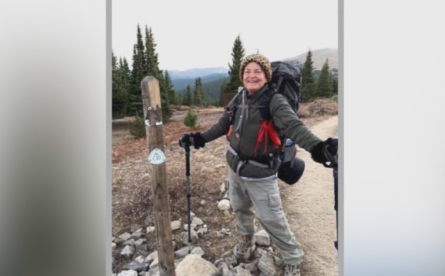

Target Audience
The target audience for this site are families that live in the surrounding areas of Fish Haven, Preston, Soda Springs, to inform them of the local weather and events that are upcoming in the area. Tourists will most likely be from low-income families and students ($20,000 yearly) and all the way up to middle income retirees (incomes around $200,000 yearly). Checking for local updates on their community weather site.
Persona 1: Tom
Tom is a family man of 32-year-old middle class work-from-home dad of 2. Every year they go visit relatives in Idaho.He is always using his cell phone to write reviews, research places to stay and fun and safe activities for his kids, ask important questions, speak to the front desk, and ensure that the weather will be perfect on the days that are planned for his very busy family trips plans.
Persona 2: Nikki
Nikki is 60-year-old single women who loves the outdoors and enjoys recreation such as hiking, boating, and other various outdoor activities in her community. She wants to keep herself updated on the activities in her local area and keep up on all of the current events in her community.
Scenario 1
Nikki needs to know if the weather in Soda Springs will be rainy or sunny so that she knows which kind of hiking gear to bring with her on her trip.
Scenario 2
Tom needs to know if the weather will be nice enough for a fishing trip on the weekend and if he needs to bring jackets and the right gear.
Scenario 3
Nikki is looking to see if there will be rain so she and some friends can go four wheeling.
Scenario 4
Tom is planning on what kind of clothing he needs to pack for when visiting family on their trip and the his in-laws in Preston as well.
Scenario 5
Tom is wondering what the weather in Fish Haven looks like, so that he knows if he will need an umbrella or sunscreen for the family.